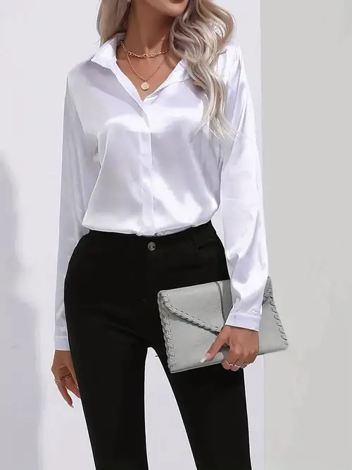

Pantalón hombre
Los pantalones de vestir suelen venir acompañados de un saco a juego, por lo que la tela dependerá del estilo del traje o temporada del año. La cintura del pantalón suele ser bastante uniforme para todos los estilos de pantalones de vestir. Puede ajustarse con un botón o con una trabilla.
Última actualización hace 3 minutos
Ver tallas

Blusa mujer
Es una prenda de vestir, generalmente femenina, que cubre la parte superior del cuerpo; hecha con una diversidad de telas, y cuya forma es muy similar a la camisa ya que ambas protegen la parte superior del cuerpo.
Última actualización hace 3 minutos
Ver tallas
Jersey niño
ersey de niño en tono marino, con el cuerpo de rombos. Composición 100% acrílico. Cuidados de la prenda. Información adicional.
Última actualización hace 3 minutos
Ver tallas